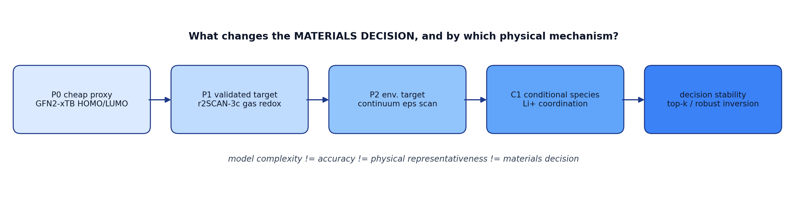

HB-LAB
电解液溶剂 / 决策稳定性研究
the finding
一个反直觉的结论，用 14 周、364 个 ORCA 作业、30 张图和一条「唯一变量」纪律做出来： 每改一层模型，都只允许一个变量变，其余全部冻结。核心集只有 18 个分子 —— 足以把机制问清楚， 不需要大数据。

validated target -> rank change -> mechanism -> minimal budget">F0 — 五段式流水线：cheap proxy → validated target → rank change → mechanism → minimal budget
hb-lab · 静态站点，无后端、无追踪。图与数字由
scripts/build_terminal_site.py 从仓库产物直接生成，页面上的每个数都能在仓库里找到出处。